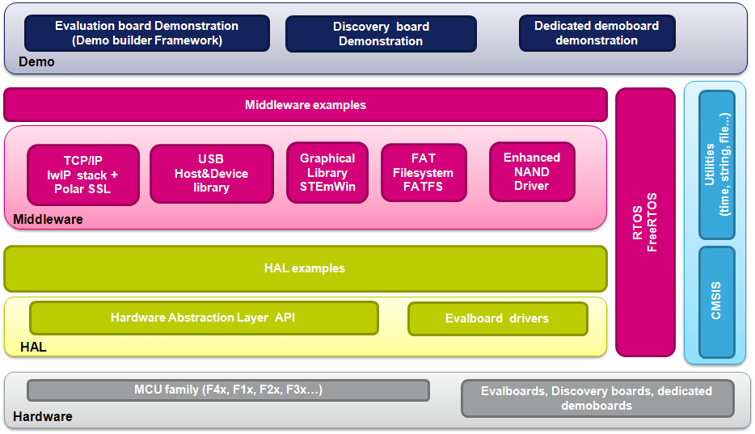

|
STMCube is an STMicroelectronics original initiative to ease developers
life by reducing development efforts, time and cost.
STM32Cube covers STM32 portfolio.
STM32Cube Version 1.x includes:
- The
STM32CubeMX, a graphical software configuration tool that allows to
generate C initialization code using graphical wizards.
- A
comprehensive embedded software platform, delivered per series (such as
STM32CubeL0 for STM32L0 series)
- The
STM32Cube HAL, an STM32 abstraction layer embedded software, ensuring
maximized portability across STM32 portfolio
- A
consistent set of middleware components such as RTOS, USB, FatFS, STM32_TouchSensing_Library
All
embedded software utilities come with a full set of examples.
- The
STM32Cube firmware solution offers a straightforward API with a modular
architecture, making it simple to fine tune custom applications and
scalable to
fit most requirements

-
The
HAL
(Hardware Abstraction Layer) drivers provided within this
package supports
the following STM32L051xx, STM32L052xx, STM32L053xx, STM32L062xx and STM32L063xx
Series. - The STM32CubeL0 firmware package comes with an updater utility, STM32CubeUpdater, that can be configured for automatic or on-demand checks for new firmware package updates (new releases or/and patches).
- For quick getting started with the STM32CubeL0 firmware package, refer to UM1745 and you can download firmware updates and all the latest documentation from www.st.com/stm32cube
Update
History
V1.1.0_BlueNRG
/ 10-Sept-2014Main Changes
- Add support of X-NUCLEO-IDB04A1 Shield for Bluetooth Low Energy (BLE)
- Add 4 STM32L053R8-Nucleo sample applications for BLE
Contents
- Middlewares
- Utilities
- Android_Software for Heart Rate Monitoring (HRM) Profile (release notes)
V1.1.0
/ 18-June-2014Main Changes
- Add support of STM32L0538-Discovery board (BSP drivers with 70 examples)
- Several HAL enhancements and bugs fix
- Use updated version of USB Device Library (1 bug fix and several enhancements) and FreeRTOS (minor update)
- STM32L053R8-Nucleo examples and application updated with respect to HAL changes (more details in the release notes)
Contents
Development
Toolchains and Compilers
- IAR Embedded
Workbench for ARM (EWARM) toolchain V7.20 + ST-Link
- RealView Microcontroller Development Kit (MDK-ARM) toolchain V5.10 + ST-LINK
- Atollic TrueSTUDIO STM32 (TrueSTUDIO) toolchain V5.0 + ST-LINK
Supported
Devices and EVAL boards
- STM32L051xx, STM32L052xx, STM32L053xx STM32L062xx and STM32L063xx
device lines
- STM32L053R8-Nucleo Board RevC
- STM32L0538-Discovery Board RevB
- STM32L152C Discovery Board RevC (STM32L152C device changed with STM32L053)
Known
Limitations
- TrueSTUDIO project is not provided for the Demonstrations
V1.0.0
/ 24-April-2014Main Changes
- First official release of STM32CubeL0 (STM32Cube for STM32L0 Series)
Contents
Development
Toolchains and Compilers
- IAR Embedded
Workbench for ARM (EWARM) toolchain V7.10 + ST-Link
- RealView Microcontroller Development Kit (MDK-ARM) toolchain V5.10 + ST-LINK
- Atollic TrueSTUDIO STM32 (TrueSTUDIO) toolchain V5.0 + ST-LINK
Supported
Devices and EVAL boards
- STM32L051xx, STM32L052xx, STM32L053xx STM32L062xx and STM32L063xx
devices
- STM32L053R8-Nucleo Board RevC
- STM32L152C DISCOVERY Board RevC (STM32L152C device changed with STM32L053)
Known
Limitations (planned for next releases)
- TrueSTUDIO project is not provided for the Demonstration
License
Licensed
under MCD-ST Liberty SW License Agreement V2, (the "License"); You may
not use this package
except in compliance with the License. You may obtain a copy of the
License at:
Unless
required by applicable law or agreed to in writing, software
distributed under the License is distributed on an "AS IS" BASIS,
WITHOUT
WARRANTIES OR CONDITIONS OF ANY KIND, either express or implied. See
the License for the specific language governing permissions and
limitations under the License.
For
complete documentation on STM32 Microcontrollers visit www.st.com/STM32
|